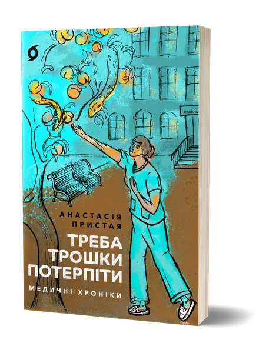
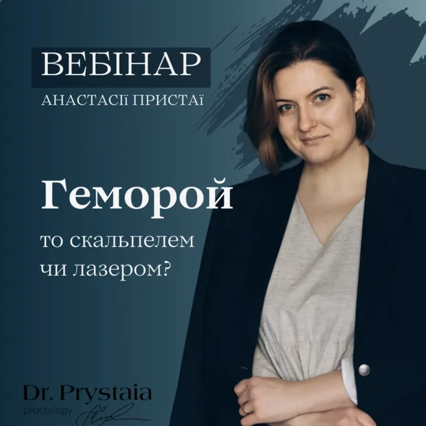
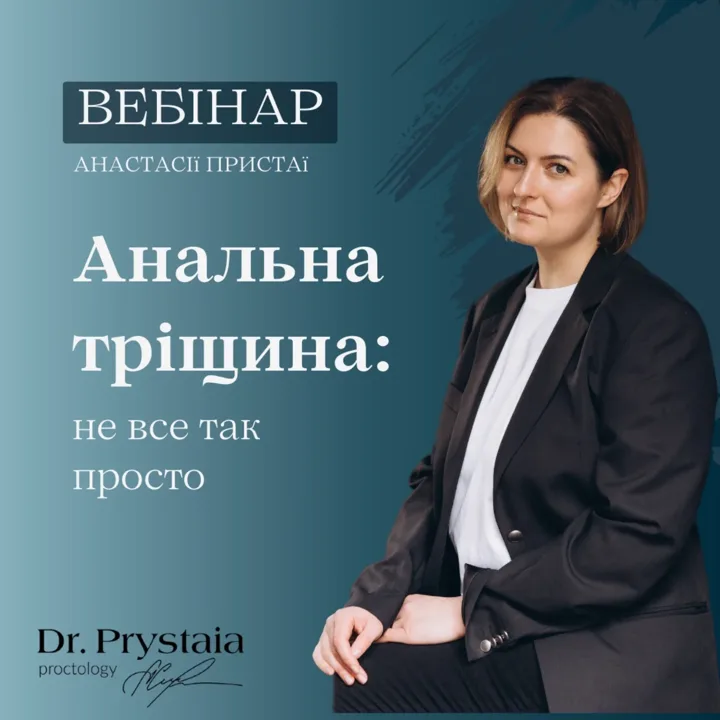
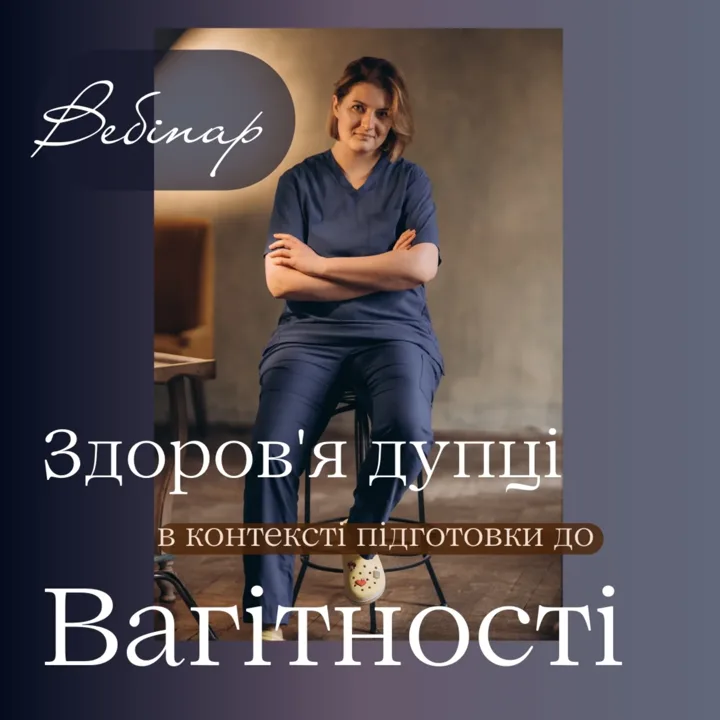
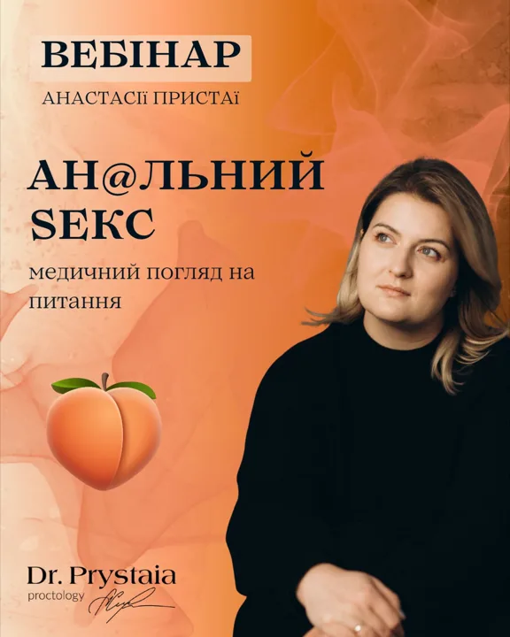

Усе починається з розмови
Ви приходите — ми сідаємо й говоримо. Консультація проходить без медсестри: ми з вами вдвох.
Поки що ніхто нікого не оглядає.
Консультую без сорому, без болю, комфортно та приватно. Чоловіків та жінок 18 – 100+ років.
Оперую весь обсяг проктологічних втручань останні 15 років, виконую 300+ операцій на рік, але ЗАВЖДИ ПО ПОКАЗАХ.
Краща операція це та, яку вдалось не зробити.

01Перед візитом
Пересуньте повзунок і відпустіть. Нічого не зберігається й нікуди не надсилається — це лише для вас.
Хвилюватись перед таким візитом — звична річ. Найкраще від цього допомагає знати, що саме буде. Тому нижче — весь прийом, крок за кроком.
02Прийом
Шість кроків від порога до виходу з кабінету.
Ви приходите — ми сідаємо й говоримо. Консультація проходить без медсестри: ми з вами вдвох.
Поки що ніхто нікого не оглядає.
Для огляду я видаю оглядові шортики, тож ви не залишаєтесь без одягу.
Так, це не вечірній дрес-код.
Огляд починається тоді, коли ми все обговорили і вам зрозуміло, що буде далі. Під час огляду використовуються лише одноразові інструменти, якісні лубриканти та мазі з місцевим знеболенням, якщо у пацієнта є больовий синдром.
Жодного «давайте швиденько, поки ви не встигли злякатись».
Зненацька нічого не робиться. Про кожен свій рух я повідомляю наперед.
Ви весь час знаєте, що буде наступної секунди.
Огляд — звичайна медична процедура, а не покарання. Моя робота — знайти причину й допомогти, а не присоромити.
Я бачила всяке — здивувати мене важко.
Огляд проводиться швидко — налякатись не встигнете. Після нього ми знову сідаємо й обговорюємо, що далі.
Із кабінету ви виходите, знаючи, що буде далі.
03Симптоми
Достатньо відчути, що щось не так. Якщо тут є щось про вас — це до мене.
Якщо під час пологів був розрив анального сфінктера (OASIS) — це точно до мене. Пацієнток із пологовими травмами приймаю без черги.
Написати асистентціВи дивуєтесь, але таке буває. І це до проктолога, а не до гінеколога. Про таке часто мовчать роками — і дарма.
Після дефекації, постійний чи періодичний — байдуже.
Випала «шишка», з'явилась гуля чи розростання тканин, шкіра навколо набрякла й гаряча.
З анального каналу. Або ще щось — здивуйте мене :)
Був товстіший, став тонкий, як олівець. Якщо до цього додаються анемія чи схуднення — тим більше варто показатись лікарю.
Це там, де хвостик не виріс :)
І не треба. Опишіть, як є — це нормальний початок розмови. Просто телефонуйте в OLYMED або запишіться онлайн.
Будь-яку проблему легше, дешевше і приємніше попередити, ніж лікувати!
Здуття живота, закрепи й подібне — це до гастроентеролога, а не до мене.
04Міфи
Торкніться картки — вона перевернеться й покаже, як насправді.
05Підготовка
Відмічайте пункти — і ви готові. Жодних дієт і голодування.
Готово: 0 з 5
Я нікуди не дінусь — проконсультую. Але є певна ймовірність, що щось пропущу, і якість такого огляду помітно падає. Тому краще встигнути.

06Про мене
Мене звати Анастасія Володимирівна Пристая, і я не люблю, коли мене називають «Настя» (тільки близькі друзі). Я проктологиня. Це якщо коротко! Бо в трудовій написано лікар-хірург-проктолог, а по факту — колопроктолог; друга моя спеціалізація — онкохірургія.
Я лікую хірургічні хвороби товстої кишки, анального каналу та періанальної ділянки. Моя місія — довести, що проктологія не соромна, а важлива, а огляд у проктолога — не покарання, а процедура, яку можна зробити комфортною.
Дупця — такий самий орган, як і всі інші: вона заслуговує на увагу й турботу без сорому.

Категорично. Принципово.
Не тому, що не хочу: моя освіта не дає на це права. З дітьми — до педіатрів і дитячих хірургів.
Я виконую всі методи оперативних втручань у проктології, але призначаю їх індивідуально, згідно з вашою ситуацією, а не через розпіареність окремого інструменту.
Операції
Оперую весь обсяг проктологічних втручань, але завжди по показах: метод я обираю індивідуально, під вашу ситуацію.
Маю один з найбільших досвідів лікування ректовагінальних нориць та OASIS (акушерської травми анального сфінктера).
07Ціни
| Послуга | Вартість |
|---|---|
| Очна консультаціяOLYMED, Київ | [ЦІНА: уточнити] |
| Онлайн-бесіда (планова)Текстом у Telegram, до 30 хв. Освітній формат. | 1500 грн |
| Онлайн-бесіда (екстрена)Текстом у Telegram. Освітній формат. | 2000 грн |
| Забір ПАП-тесту та ВПЛ | ~2000 грн |
| Латексне лігування | 3500 грн |
| Плазмотерапія | 3500 грн |
| Видалення бахромок та невеликих утворень періанальної ділянки | 3500 грн |
| Ін'єкції ботоксу при анальних тріщинах, гіпертонусі м'язів тазового днаВартість залежить від кількості препарату. | 3000–15000 грн |
| ОпераціїОперую в клініці «Феофанія». Запис — після консультації (очної чи онлайн). Вартість втручань дуже варіює відносно місця проведення, діагнозу, обʼєму, ваших побажань. Тож зорієнтую на основі консультації. Не переживайте, хірургія для мене покликання, я стараюсь робити максимально доступні втручання. Військові оперуються безоплатно! | Після консультації |
Остаточну вартість підтверджує адміністратор клініки. Обсяг і метод лікування визначає лікар під час консультації.
08Поглибити






Сторіс, хайлайти, Reels.
Більше тут
09Питання
Я консультую жінок і чоловіків від 18 до 100+ років, будь-якої сексуальної орієнтації та віросповідання. Толерантність 100%.
Так. Якщо я кажу, що треба оперувати, то я маю на увазі, що я це зроблю, а не покличу «дорослих». Проктологічні втручання я виконую вже 15 років.
Усе обговорюється на консультації. Якщо після огляду та бесіди я рекомендую втручання, одразу все популярно пояснюю — тільки ту інформацію, що стосується саме вашої проблеми. Це буде достовірно, потрібно і цікаво. Підготовку до операції та всі дрібні моменти (не складні у виконанні) видаю у вигляді текстового документа.
Це нормально, і ви точно не перші. Саме тому я розписала весь прийом наперед — крок за кроком. Коли знаєш, що буде, страху лишається значно менше. А якщо у «Феофанії» поруч буде інтерн чи практикант — це чудово: ми навчаємо наступне покоління проктологів, і це в ваших інтересах.
Ніііііі! Колоноскопія — це неймовірно класне проктологічне дослідження, яке виконують ЕНДОСКОПІСТИ. І хай займаються! Щоб робити це добре, потрібно робити це нон-стоп. А я знаю крутеньких спеців і за потреби направлю.
Навіть треба. Маю другу спеціальність — онкохірургію — і чудову команду онкологів. Виконуємо операції лапароскопічно (коли пузіко не розрізається, а робляться маленькі проколи).
10Запис
Проктолог у Києві: очно в клініці OLYMED або онлайн-бесіда в Telegram. Оберіть зручний шлях.
Під час запису уточніть, що вам саме до Анастасії Пристаї. Клініка працює: пн–пт 9:00–18:00, сб–нд — зачинено.
Планово — 1500 грн · до 30 хвилин
Екстрено — 2000 грн
Письмова розмова в Telegram. Запис — через мого асистента в Telegram: там пояснять усі деталі, надішлють реквізити ФОП і анкету.
Це освітній формат, а не повноцінна консультація: точний діагноз без огляду неможливий.
Уточнювальні питання — протягом 7 днів, потім я видаляю бесіду для себе. Прочитати правила.
Перед записом обов'язково прочитайте договір публічної оферти.
Я розумію, що записатись важко: черга велика. Але понад 6 днів на тиждень фізично працювати не можу. Тому є лист очікування: асистент запише ваші дані й зв'яжеться з вами, щойно звільниться місце або відкриється новий консультативний день.
Прооперовані пацієнти приходять безкоштовно і без черги. Дякую, що чекаєте!
Я іноді хворію — і тоді консультація може відмінитись. Але я обов'язково виділю додатковий день, щоб вам допомогти.
Допомога
Долучитись до збору можна за посиланням на банку Monobank.